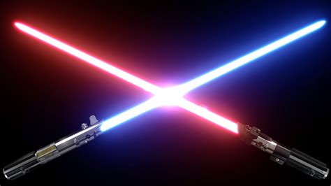
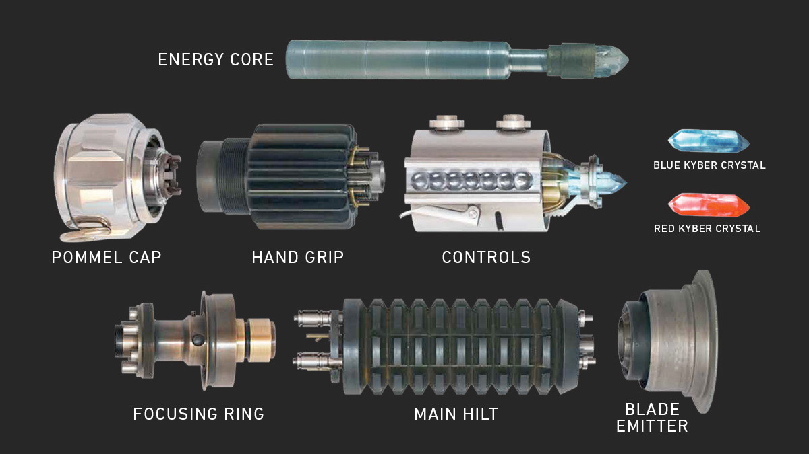

Star Wars
LIGHTSABER

The lightsaber is the weapon of a Jedi, an elegant weapon of a more civilized age. It can be used to cut through blast doors or enemies alike. Using the Force, a Jedi can predict and deflect incoming blaster bolts, and reflect them.

Count Dooku's Lightsaber

Count Dooku’s red-bladed lightsaber was an elegant weapon befitting a refined man. Its gracefully curved hilt let Dooku slash and lunge with greater precision. Dooku defeated Obi-Wan Kenobi and Anakin Skywalker in a lightsaber duel on Geonosis before being bested by Yoda. He fought Obi-Wan and Anakin again during the Clone Wars, as well as his former apprentices Asajj Ventress and Savage Opress, before dying in a final confrontation with Anakin.